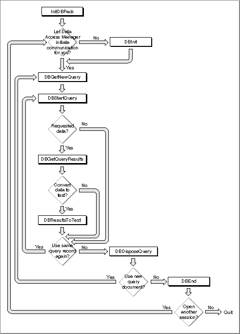

Legacy Document
Important: The information in this document is obsolete and should not be used for new development.
Important: The information in this document is obsolete and should not be used for new development.


Using the High-Level Interface
Use the high-level interface to the Data Access Manager if you want to use a query document to do the work of communicating with a data source. You can use the high-level interface to open a query document, execute the query definition function in the query document, establish communication (initiate a session) with a data server, send the query to the data server, execute the query, retrieve any data requested by the query, and convert the retrieved data to text. Although two or three high-level routines accomplish most of these tasks, you may need to call a few low-level routines as well to control a session with a data server.Applications that implement this type of data access must provide user control and feedback as described in "General Guidelines for the User Interface" on page 12-13. In addition, you should include an Open Query command in the File menu. The Open Query command is equivalent to the Open (file) command in meaning. When the user chooses this command, display an open file dialog box filtered to show only query documents (file type
'qery'). The user can then select the desired query document. The query document contains the query to be sent to the data source. Depending on the type of query, the data source could receive information, send back information, report the status of the data source, or perform some other task.Figure 12-4 is a flowchart of a typical session using the high-level interface.
As Figure 12-4 illustrates, you must follow this procedure to use the high-level interface:
Figure 12-4 A flowchart of a session using the high-level interface
- Call the
InitDBPackfunction to initialize the Data Access Manager.- Select the query document that you want to use and determine the resource ID of the
'qrsc'resource in that query document. You can use any method you like to select the query document. One possibility is to use theStandardGetFileprocedure to let the user select the query document. A query document should contain only one'qrsc'resource; you can then use the Resource Manager to determine the resource ID of the'qrsc'resource in the document that the user selected. For further information, see the description of theStandardGetFileprocedure in the chapter "Standard File Package" in Inside Macintosh: Files and the chapter "Resource Manager" in Inside Macintosh: More Macintosh Toolbox.- Call the
DBGetNewQueryfunction. TheDBGetNewQueryfunction creates in memory a data structure called a query record from the'qrsc'resource that you specify.- Call the
DBStartQueryfunction specifying the handle to the query record that you created with theDBGetNewQueryfunction (step 3).You should also provide the
DBStartQueryfunction with a handle to your status routine. A status routine is a routine that you provide to update windows, check the results of the low-level calls made by theDBStartQueryandDBGetQueryResultsfunctions, and cancel execution of these functions when you consider it appropriate to do so.

The
DBStartQueryfunction calls the query definition function (if any) referred to by the query record. The query definition function can prompt the user for information and modify the query record.After the query definition function has completed execution, the
DBStartQueryfunction calls your status routine so that you can update your windows if necessary. TheDBStartQueryfunction then checks whether communication has been established with the data server. If not, it calls your status routine so that you can display a status dialog box and then calls theDBInitfunction to establish communication (initiate a session) with the data server. TheDBStartQueryfunction obtains the values it needs for theDBInitfunction parameters from the query record. When theDBInitfunction completes execution, theDBStartQueryfunction calls your status routine again.The
DBInitfunction returns an identification number, called a session ID. This session ID is unique; no other current session, for any database extension, has the same session ID. You must specify the session ID any time you want to send data to or retrieve data from this session. If you prefer, you can use theDBInitfunction to establish communication before you call theDBStartQueryfunction. In that case, you must specify the session ID as an input parameter to theDBStartQueryfunction. See "Using the Low-Level Interface" beginning on page 12-28 for more information on using theDBInitfunction.Once communication has been established, the
DBStartQueryfunction calls theDBSendfunction to send the data server the query specified by the query record. When theDBSendfunction has completed execution, theDBStartQueryfunction calls your status routine. Finally, theDBStartQueryfunction uses theDBExecfunction to execute the query. TheDBStartQueryfunction calls your status routine after theDBExecfunction has completed execution (that is, the query has started executing and theDBExecfunction has returned control to theDBStartQueryfunction) and again just before theDBStartQueryfunction completes execution.
Listing 12-1 illustrates the use of the high-level interface. This code initiates a session with a remote database, lets the user select a query document to execute, opens the selected file, finds a
- If you requested data and want to know when the data is available, but do not want to retrieve the data immediately, you can call the
DBStatefunction. This function tells you when the data server has finished executing the query, but it does not retrieve the data. If you requested data and want to retrieve it as soon as it is available, you do not have to call theDBStatefunction; go to step 6 instead.If you did not request data, you can use the
DBStatefunction to determine the status of the query. When the data server has finished executing the query, skip to step 8.- Call the
DBGetQueryResultsfunction. If the query has not finished executing, this function returns thercDBExecresult code. If the query has finished executing, theDBGetQueryResultsfunction calls theDBGetItemfunction repeatedly until the data server has returned all of the data available.The
DBGetQueryResultsfunction puts the returned data into a record that contains handles to arrays that contain the data, the type of data in each column, and the length of each data item. The Data Access Manager allocates the memory for this data in the application heap.The
DBGetQueryResultsfunction calls your status routine after it retrieves each data item. You can use this opportunity to display the data item for the user and to give the user the opportunity to cancel execution of the function. TheDBGetQueryResultsfunction also calls your status routine just before completing execution, so that you can dispose of any memory allocated by the status routine, remove any dialog box that you displayed, and update your windows if necessary.To convert the returned data to text, go to the next step. If you do not want to convert the returned data to text, skip to step 9.
- Call the
DBResultsToTextfunction. This function calls a result handler function for each data type. The result handler converts the data to text, places it in a buffer, and returns a handle to the buffer. Some result handlers are provided with the Data Access Manager; you can provide as many with your application as you wish. Result handlers are discussed in "Converting Query Results to Text" beginning on page 12-43.- If you are finished using the query record, call the
DBDisposeQueryfunction to dispose of the query record and free all the memory associated with the query record. If you want to reuse the same query, return to step 5. You should close the query document when you are finished using it.If you want to use a new query document, return to step 3.
- When you are finished using the data source, you must use the
DBEndfunction to terminate the session. You must call theDBEndfunction after theDBInitfunction has returned a nonzero session ID, even if it also returned an error.
'qsrc'resource, and creates a query record. Next, it executes the query, checks the status of the remote database server, retrieves the data when it's available, and converts this data to text. When the query has finished executing, the code disposes of the query record, ends the session, and closes the user-selected query document. In general, there's no reason why there can't be multiple sessions open at once. You can identify each session by its session ID. Listing 12-1 shows just one session.Listing 12-1 assumes that you are using a database extension that supports asynchronous execution of Data Access Manager routines. This listing shows just one possible approach to sending a query and retrieving data asynchronously.
Listing 12-1 Using the high-level interface
PROCEDURE MyHiLevel(VAR rr: ResultsRecord; myTextHdl: Handle; VAR thisSession: LongInt; VAR sessErr: OSErr); TYPE {define a record to include space for the current value in } { A5 so a completion routine can find it} CRRec = RECORD QPB: DBAsyncParamBlockRec; {the parameter block} appsA5: LongInt; {append A5 to the } { parameter block} END; CRRecPtr = ^CRRec; VAR StartPB, GetQRPB: CRRec; SFR: StandardFileReply; packErr, startQErr, getQErr, disposeQErr: OSErr; getnewQErr, gStartQErr, gGetQRErr: OSErr; endErr, fsopenErr, fscloseErr, resultsErr: OSErr; gStart, gQueryResults: Boolean; qrscHandle: Handle; rsrcID: Integer; rsrcType: ResType; rsrcName: Str255; myQHandle: QueryHandle; savedResFile: Integer; typeList: SFTypeList; fsRefNum: Integer; FUNCTION GetQPB: CRRecPtr; INLINE $2E88; {MOVE.L A0,(SP)} BEGIN gStart := FALSE; gQueryResults := FALSE; sessErr := noErr; {assume everything went fine} packErr := InitDBPack; {initialize the Data Access Mgr} {display a dialog box to let the user pick a query document} typeList[0] := 'qery'; StandardGetFile(NIL, 1, typeList, SFR); IF SFR.sfGood = TRUE THEN fsopenErr := FSpOpenRF(SFR.sfFile, fsCurPerm, fsRefNum); IF (fsopenErr <> noErr) OR (SFR.sfGood = FALSE) THEN BEGIN sessErr := fsopenErrOrUserCanceled; EXIT(MyHiLevel); END; savedResFile := CurResFile; {save current resource file} UseResFile(fsRefNum); {get query info from here} {a query document should have only one 'qrsc' resource} qrscHandle := Get1IndResource('qrsc', 1); IF ResError <> noErr THEN BEGIN sessErr := ResError; EXIT(MyHiLevel); END; {get the resource ID of the 'qrsc' resource} GetResInfo(qrscHandle, rsrcID, rsrcType, rsrcName); {create a query record using the resource ID} getnewQErr := DBGetNewQuery(rsrcID, myQHandle); IF getnewQErr <> noErr THEN BEGIN sessErr := getnewQErr; endErr := DBEnd(thisSession, NIL); EXIT(MyHiLevel); END; StartPB.QPB.completionProc := @MyStartCompRoutine; StartPB.appsA5 := SetCurrentA5; {save this for the } { completion routine} {MyStartStatus is a status routine that handles messages sent } { by the DBStartQuery function when it calls a low-level } { function} startQErr := DBStartQuery(thisSession, myQHandle, @MyStartStatus, @StartPB); IF startQErr <> noErr THEN BEGIN sessErr := startQErr; IF thisSession <> 0 THEN endErr := DBEnd(thisSession, NIL); EXIT(MyHiLevel); END; WHILE NOT gStart DO {while waiting for gStart to go TRUE, } BEGIN { MyGoDoSomething calls WaitNextEvent } MyGoDoSomething; { to give other routines a chance to run} END; {while} {the DBStartQuery call has completed} IF gStartQErr <> noErr THEN BEGIN sessErr := gStartQErr; IF thisSession <> 0 THEN endErr := DBEnd(thisSession, NIL); EXIT(MyHiLevel); END; GetQRPB.QPB.completionProc := @MyGetQRCompRoutine; GetQRPB.appsA5 := SetCurrentA5; {save this for the } { completion routine} {MyGetQRStatus is a status routine that handles messages sent } { by the DBGetQueryResults function when it calls a low-level } { function.} getQErr := DBGetQueryResults(thisSession, rr, kDBWaitForever, @MyGetQRStatus, @GetQRPB); IF getQErr <> noErr THEN BEGIN sessErr := getQErr; endErr := DBEnd(thisSession, NIL); EXIT(MyHiLevel); END; WHILE NOT gQueryResults DO BEGIN MyGoDoSomething; END; {while} {The DBGetQueryResults call has completed. Assuming the call } { completed successfully, you may want to convert the } { retrieved data to text, return memory you have borrowed, } { and end the session.} IF gGetQRErr <> noErr THEN BEGIN sessErr := gGetQRErr; endErr := DBEnd(thisSession, NIL); EXIT(MyHiLevel); END; {the data has been retrieved; convert it to text} resultsErr := DBResultsToText(rr, myTextHdl); {The current query is finished. You can elect to execute } { the next 'qrsc' resource of the file, or select another } { query document. This example just returns to the caller.} disposeQErr := DBDisposeQuery(myQHandle); UseResFile(savedResFile);{restore current resource file} fscloseErr := FSClose(fsRefNum); {close the query document} IF fscloseErr <> noErr THEN DoError(fscloseErr); endErr := DBEnd(thisSession, NIL); IF endErr <> noErr THEN DoError(endErr); END;Listing 12-2 shows the completion routinesMyStartCompRoutineandMyGetQRCompRoutineused in Listing 12-1.Listing 12-2 Two completion routines
PROCEDURE MyStartCompRoutine(aCRRecPtr: CRRecPtr); VAR curA5: LongInt; BEGIN aCRRecPtr := GetQPB; {get the param block} curA5 := SetA5(aCRRecPtr^.appsA5); {set A5 to the app's A5} gStart := TRUE; {query has been started} gStartQErr := aCRRecPtr^.QPB.result;{send back result code} {do whatever else you want to do} curA5 := SetA5(curA5);{restore original A5} END; {MyStartCompRoutine} PROCEDURE MyGetQRCompRoutine(aCRRecPtr: CRRecPtr); VAR curA5: LongInt; BEGIN aCRRecPtr := GetQPB; {get the param block} curA5 := SetA5(aCRRecPtr^.appsA5); {set A5 to the app's A5} gQueryResults := TRUE;{query results are complete} gGetQRErr := aCRRecPtr^.QPB.result; {send back the result code} {do whatever else you want to do} curA5 := SetA5(curA5); {restore original A5} END; {MyGetQRCompRoutine}The next section provides information about status routines.